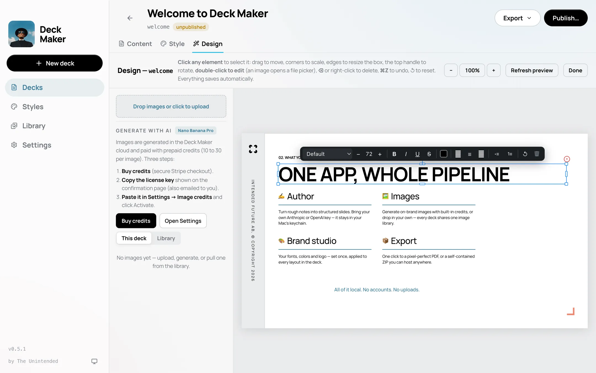

Yours, not ours
Decks are files on your disk, not rows in someone's database. No account, no sync, no seat to renew. Nothing disappears if we do.
Free · Local · Bring your own AI key
Drop in Markdown, an old PowerPoint, a PDF, or just describe the deck in a sentence. It comes back on brand and ready to present, and goes out as a PDF, a PPTX, or a website. Everything runs on your machine: a local LLM, or your own API key from any of the cloud providers.
also: Mac (Intel) · Windows · Linux
A looping illustration of the flow: draft a deck script in Claude, drop the Markdown into a new deck, point StyleMaker at your website to lift the palette, font, and logo, and get back a styled slide.
Markdown notes (draft them in Claude or ChatGPT first if you like), an old PowerPoint, or a PDF. That's the whole input.
.md · .pptx · .pdfGive StyleMaker your website and it lifts the palette, type, and logo. Or let it read the look of whatever file you dropped in. Either way, your content lands on clean layouts.
StyleMaker → your brandA print-clean PDF, a genuinely editable PPTX, or a self-contained site you can host anywhere.
.pdf · .pptx · website
Decks are files on your disk, not rows in someone's database. No account, no sync, no seat to renew. Nothing disappears if we do.
Use your own key for Anthropic, OpenAI, or xAI Grok, or run a local model and stay offline entirely. Keys live in your system keychain, never on our servers.
Generate slide art with Nano Banana Pro from inside the app. Buy a small credit pack only if you use it. Everything else is free.
That 40-slide PPTX from 2019 becomes clean, editable content, images and all.
Click anything on the canvas and change it: slide text, layout, images, styling.
New versions install themselves from GitHub Releases. You'll never download an installer twice.
Deck Maker reports three anonymous events (app launched, deck created, deck exported) along with your app version and OS. Never your content, your prompts, or your keys. IP addresses are never stored. More in the FAQ →
The Windows build isn't code-signed yet, so SmartScreen may warn on first run. All releases → (opens in a new tab)